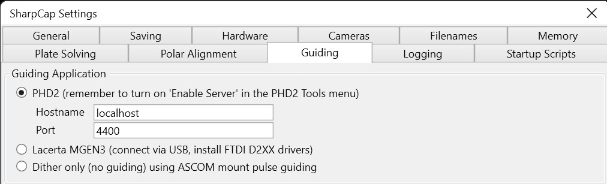
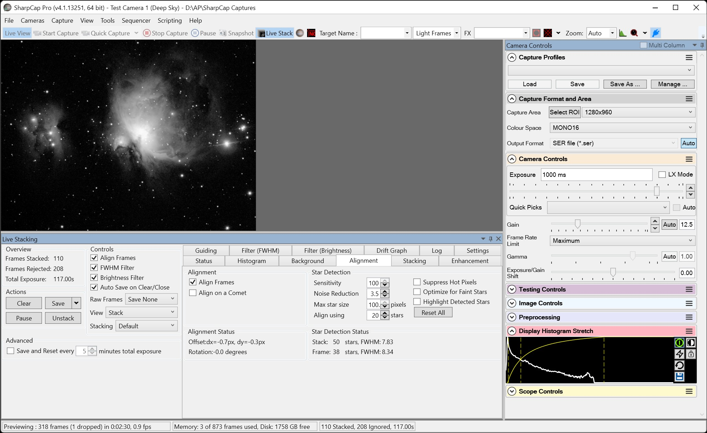

HelioMaker can be used for deep sky lucky imaging together with SharpCap Pro's Live Stacking feature. In this workflow, PHD2 performs star guiding while SharpCap Pro captures and stacks short exposures. HelioMaker helps coordinate the connection between SharpCap Pro and PHD2 and, when using a shared camera, provides the Find & Track interface used to switch into Star Mode.
When PHD2 is configured with the Virtual Planetary Camera, both SharpCap Pro and PHD2 operate on the same camera stream. In this setup, open Find & Track and select Star Mode. In Star Mode, HelioMaker lets PHD2 use its built-in star detection algorithms, while SharpCap Pro continues handling the live capture stream.
Lucky imaging, also referred to as Live Stack in SharpCap Pro, works best with short exposures that align with guiding frame rates of about one frame every few seconds (typically 1-3 seconds). Make sure to set the exposure time in SharpCap Pro and adjust PHD2's minimum guiding period in HelioMaker to match the desired timing.

Lucky imaging is also possible when PHD2 uses its own dedicated guiding camera. In that case, SharpCap Pro's Live Stack feature can work with PHD2 guiding alone, without requiring HelioMaker to provide the shared camera stream. HelioMaker's Find & Track with a Physical PHD2 Camera chapter explains the related Star Mode and physical-camera behavior.
Before using Lucky Imaging in SharpCap Pro with HelioMaker and PHD2, make sure to configure the correct connection settings.
In SharpCap Pro's Guiding tab, select PHD2 as the guiding interface and set the port number to
4400 + (PHD2 instance number - 1). For example:
This ensures SharpCap Pro and PHD2 communicate on the same port HelioMaker uses for the shared camera stream or the selected PHD2 instance. Once configured, SharpCap Pro relays each live frame to PHD2, and PHD2 guides on your chosen star without requiring a separate guide scope in shared-camera mode.

The Find & Track tool is designed to work seamlessly with SharpCap Pro's Live Stack feature. Dithering is fully supported in this mode, along with most other SharpCap Pro Live Stack options.
For optimum guiding in this workflow, it may also be beneficial to build and use a PHD2 Dark Library or Bad-pixel Map, especially when guiding on the same short-exposure live frames used by SharpCap Pro. For more information, please refer to Notes About PHD2 Dark Library and Image Calibration.
For additional details on setting up a Live Stack session, please refer to the SharpCap Live Stacking documentation and other online resources.
